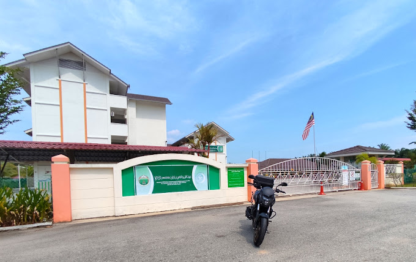

MY EDUCATION
My Secondary School Experience
From the age of 13 to 17, I began my secondary school journey at Sekolah Menengah Kebangsaan Bandar Rinching for two months before receiving an offer at Maahad Integrasi Tahfiz Selangor (MITS) Bagan Lalang, Sepang, where I would continue my education.
In 2019, I was appointed as the Head of School Cheer, where I led and organized cheerleading activities.
Sports and Recreation Committee & SPBT Supervisor (2020)I served on the Sports and Recreation Committee and supervised the SPBT program, promoting physical activities among students.
Chief Supervisor of SPBT (2021)In 2021, I became the Chief Supervisor of SPBT, taking on more responsibilities in managing school resources.
Musammarah Event Representation (2018-2020)I proudly represented the school in the Musammarah event during these years, showcasing our talents and dedication.
Cross-Country Representation (2018-2020)I also represented the school in cross-country events, contributing to team spirit and physical fitness.
PT3 Examination Results (2019)In my PT3 exams, I achieved 3A, 5B, 2C, 1D, and 1E, demonstrating my academic efforts.
Memorizing 30 Juzu' (2021)In 2021, I accomplished the challenge of memorizing 30 Juzu', a testament to my dedication to learning.
SPM Examination ResultsFinally, I sat for my SPM exams and achieved 6A, 3B, 1C, and 1E, which marked a significant milestone in my education journey.